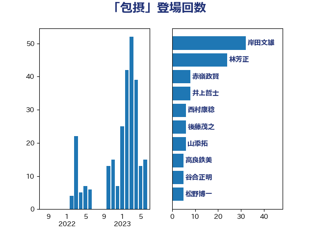

単語「包摂」

| 岸田文雄 | 自由民主党 | 32 回 |
| 林芳正 | 自由民主党 | 24 回 |
| 赤嶺政賢 | 日本共産党 | 8 回 |
| 井上哲士 | 日本共産党 | 8 回 |
| 西村康稔 | 自由民主党 | 6 回 |
| 後藤茂之 | 自由民主党 | 6 回 |
| 山添拓 | 日本共産党 | 6 回 |
| 高良鉄美 | 無所属 | 5 回 |
| 谷合正明 | 公明党 | 5 回 |
| 松野博一 | 自由民主党 | 5 回 |
| 小倉將信 | 自由民主党 | 5 回 |
| 齋藤健 | 自由民主党 | 4 回 |
| 鈴木俊一 | 自由民主党 | 4 回 |
| 浅野哲 | 国民民主党 | 4 回 |
| 小池晃 | 日本共産党 | 4 回 |
| 上月良祐 | 自由民主党 | 4 回 |
| 鬼木誠 | 立憲民主党 | 3 回 |
| 葉梨康弘 | 自由民主党 | 3 回 |
| 舩後靖彦 | れいわ新選組 | 3 回 |
| 岡田直樹 | 自由民主党 | 3 回 |
| 山下芳生 | 日本共産党 | 3 回 |
| 宮路拓馬 | 自由民主党 | 3 回 |
| 吉田久美子 | 公明党 | 3 回 |
| 鰐淵洋子 | 公明党 | 2 回 |
| 萩生田光一 | 自由民主党 | 2 回 |
| 津島淳 | 自由民主党 | 2 回 |
| 河野太郎 | 自由民主党 | 2 回 |
| 水岡俊一 | 立憲民主党 | 2 回 |
| 武井俊輔 | 自由民主党 | 2 回 |
| 大野敬太郎 | 自由民主党 | 2 回 |
| 大口善徳 | 公明党 | 2 回 |
| 加藤勝信 | 自由民主党 | 2 回 |
| 伊佐進一 | 公明党 | 2 回 |
| 三浦信祐 | 公明党 | 2 回 |
| 高階恵美子 | 自由民主党 | 1 回 |
| 高橋光男 | 公明党 | 1 回 |
| 高木かおり | 日本維新の会 | 1 回 |
| 青木一彦 | 自由民主党 | 1 回 |
| 鎌田さゆり | 立憲民主党 | 1 回 |
| 鈴木貴子 | 自由民主党 | 1 回 |
| 野田聖子 | 自由民主党 | 1 回 |
| 赤池誠章 | 自由民主党 | 1 回 |
| 西村智奈美 | 立憲民主党 | 1 回 |
| 若宮健嗣 | 自由民主党 | 1 回 |
| 舟山康江 | 国民民主党 | 1 回 |
| 笠井亮 | 日本共産党 | 1 回 |
| 穀田恵二 | 日本共産党 | 1 回 |
| 畦元将吾 | 自由民主党 | 1 回 |
| 田畑裕明 | 自由民主党 | 1 回 |
| 田村貴昭 | 日本共産党 | 1 回 |
| 田村智子 | 日本共産党 | 1 回 |
| 田村まみ | 国民民主党 | 1 回 |
| 漆間譲司 | 日本維新の会 | 1 回 |
| 浜野喜史 | 国民民主党 | 1 回 |
| 松本剛明 | 自由民主党 | 1 回 |
| 杉本和巳 | 日本維新の会 | 1 回 |
| 杉尾秀哉 | 立憲民主党 | 1 回 |
| 平木大作 | 公明党 | 1 回 |
| 市村浩一郎 | 日本維新の会 | 1 回 |
| 岡本あき子 | 立憲民主党 | 1 回 |
| 山崎正恭 | 公明党 | 1 回 |
| 小山展弘 | 立憲民主党 | 1 回 |
| 宮本徹 | 日本共産党 | 1 回 |
| 宮本周司 | 自由民主党 | 1 回 |
| 宮下一郎 | 自由民主党 | 1 回 |
| 安江伸夫 | 公明党 | 1 回 |
| 奥野総一郎 | 立憲民主党 | 1 回 |
| 太田房江 | 自由民主党 | 1 回 |
| 大家敏志 | 自由民主党 | 1 回 |
| 大塚耕平 | 国民民主党 | 1 回 |
| 古川禎久 | 自由民主党 | 1 回 |
| 倉林明子 | 日本共産党 | 1 回 |
| 伊藤岳 | 日本共産党 | 1 回 |
| 井上貴博 | 自由民主党 | 1 回 |
| 中川正春 | 立憲民主党 | 1 回 |
| 中川宏昌 | 公明党 | 1 回 |
| 世耕弘成 | 自由民主党 | 1 回 |
| 三原じゅん子 | 自由民主党 | 1 回 |
| こやり隆史 | 自由民主党 | 1 回 |